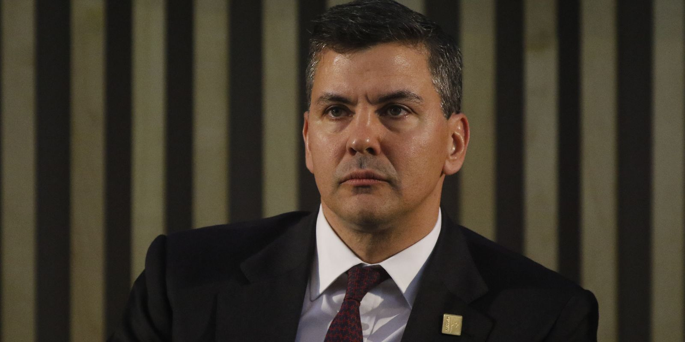

Ex-presidente do Paraguai, Santiago Peña, é preso após impeachment
Destituído pelo Senado nesta sexta-feira (6), Peña foi detido em sua residência em Assunção. Investigação envolve a crise do Ueno Bank.

O que aconteceu
O ex-presidente do Paraguai Santiago Peña foi detido em sua residência em Assunção nesta sexta-feira, 6 de novembro de 2026, após ser destituído do cargo pelo Senado. O Ministério Público determinou a detenção por suspeitas de lesão de confiança e outros possíveis crimes relacionados à crise do Ueno Bank. A agência EFE e a emissora paraguaia Telefuturo confirmaram o cumprimento da medida em sua casa. O Senado aprovou a destituição com os votos dos 44 senadores presentes. Pedro Alliana, até então vice-presidente, assumiu a Presidência. A crise política se agravou após a intervenção do Banco Central no Ueno Bank, instituição que atendia milhões de clientes e concentrava depósitos de entidades públicas. A investigação também alcança o ex-presidente do Banco Central do Paraguai Carlos Carvallo. Peña deverá ser apresentado ao Ministério Público para os procedimentos legais. A detenção não equivale a condenação criminal.
Análise do Corvo
A destituição e a detenção do ex-presidente representam uma crise institucional de grande dimensão no Paraguai. O foco imediato das autoridades é apurar responsabilidades pela gestão de recursos públicos e pela supervisão do sistema bancário, enquanto depositantes buscam recuperar o acesso ao dinheiro. A transição para Pedro Alliana não encerra as investigações. A transparência sobre as decisões tomadas por dirigentes bancários, reguladores e autoridades políticas será decisiva para a confiança nas instituições.
Contraponto
Santiago Peña negou irregularidades. As suspeitas devem ser investigadas com respeito à presunção de inocência e ao devido processo legal. A prisão domiciliar não constitui prova de culpa.